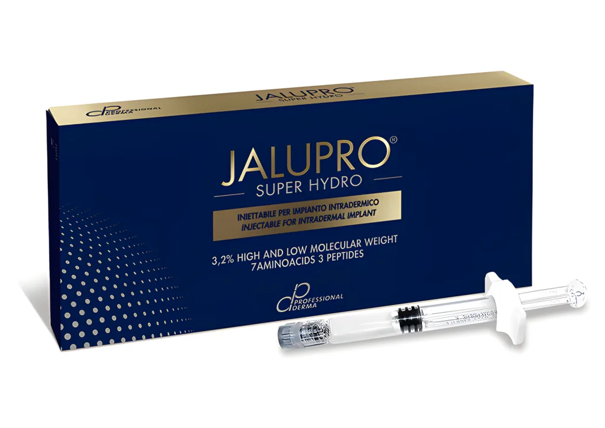
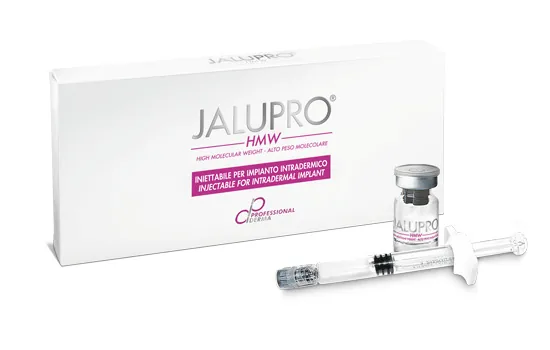
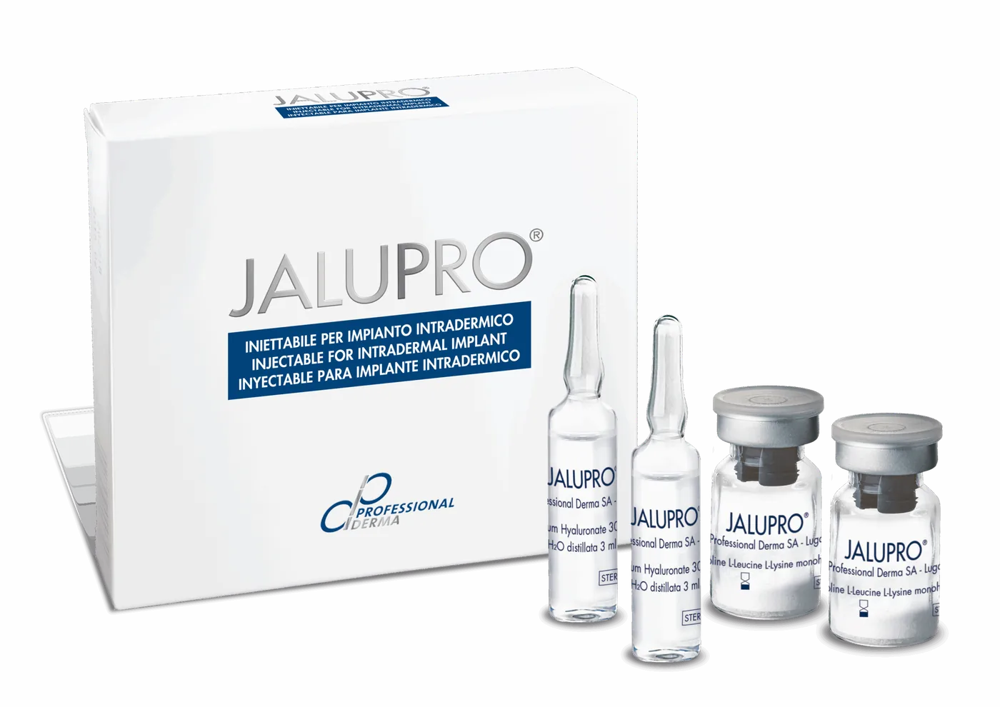
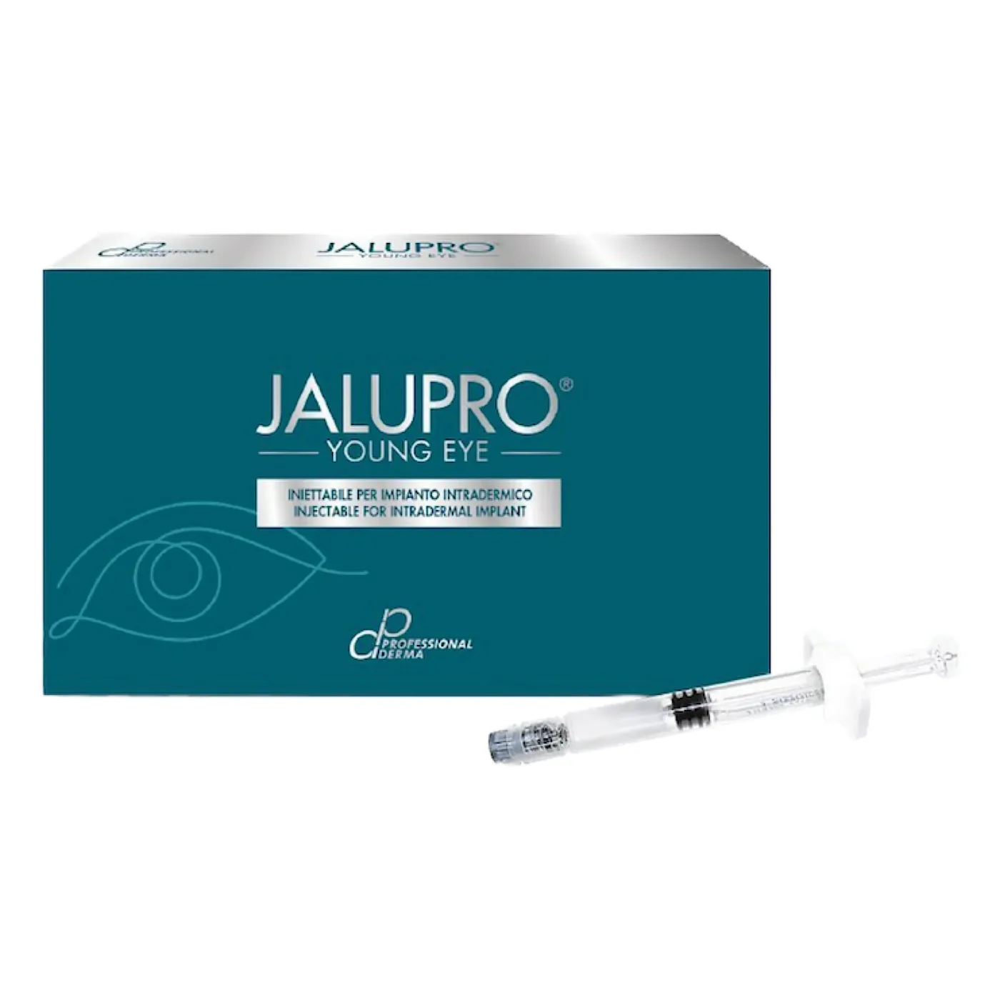
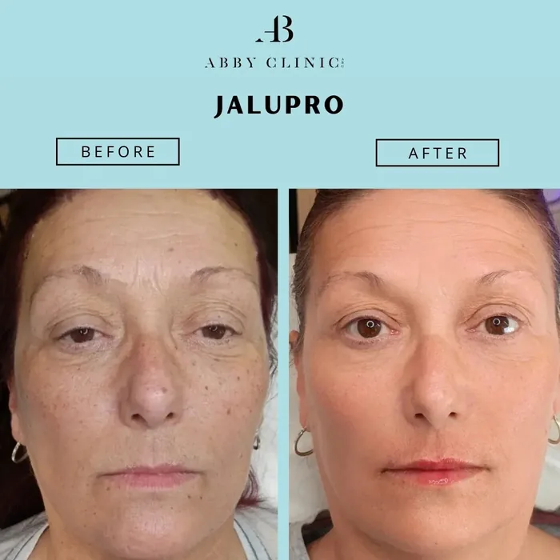
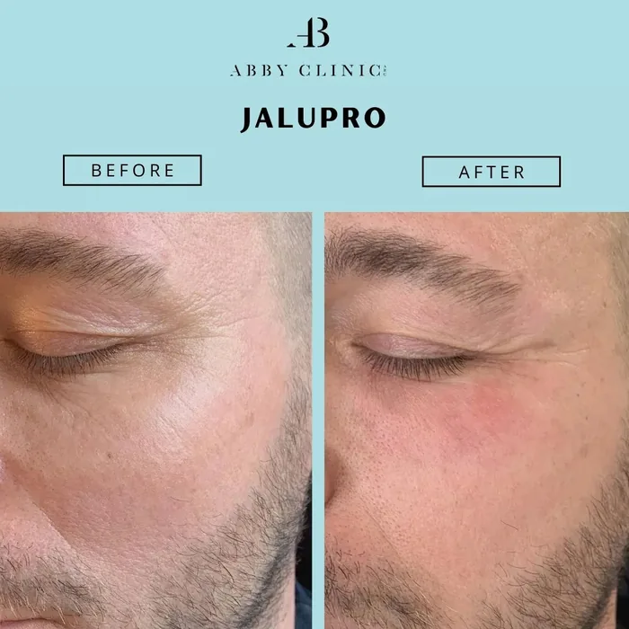
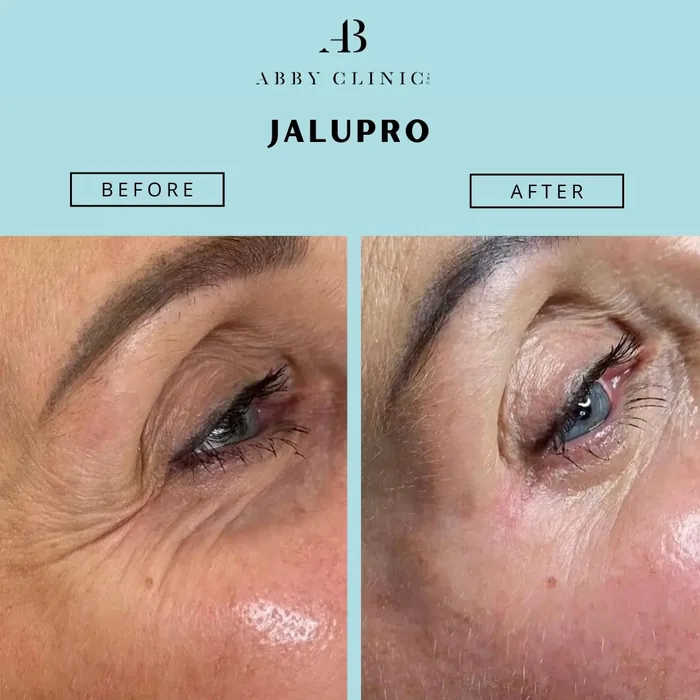
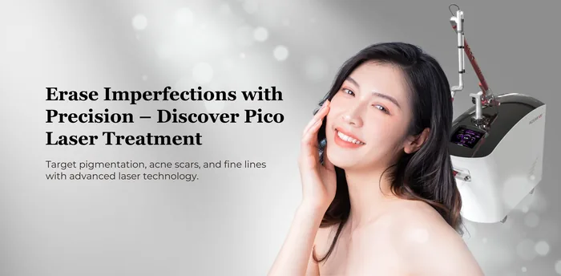
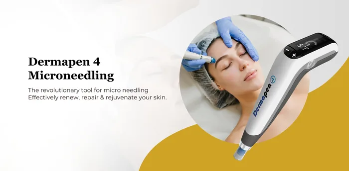
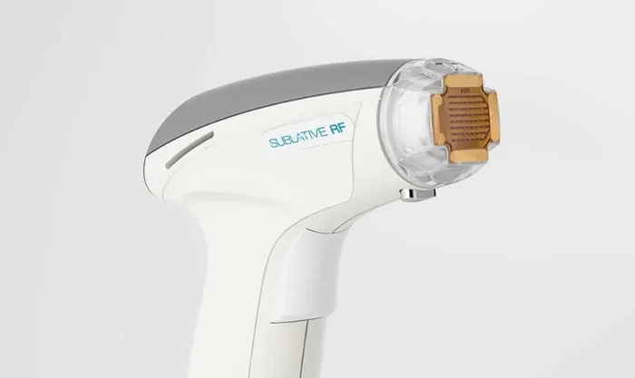

Jalupro
Formulated with a unique blend of hyaluronic acid and amino acids, Jalupro helps to restore hydration, improve elasticity, and stimulate natural collagen production.
What is Jalupro & How Does It Work?
Jalupro is an advanced injectable skin booster designed to rejuvenate the skin from within. It is composed of two small bottles containing lyophilised amino acids—Glycine, L-Proline, L-Leucine, and L-Lysine—together with two vials of sodium hyaluronate. Before treatment, the amino acids are carefully mixed with sodium hyaluronate to create a powerful solution that nourishes, hydrates, and supports the skin at a cellular level.
This unique formulation provides the essential building blocks required for collagen and elastin production, while also delivering deep hydration to restore vitality and radiance.
Skin Concerns Treated
Fine lines and wrinkles
Loss of firmness and elasticity
Dry, dehydrated, or dull-looking skin

Uneven skin tone and texture
Photoaged skin caused by sun damage
Stretch marks and superficial scars
Under-eye concerns such as dark circles and fine creases
Hydration, Collagen, and Confidence with Jalupro
Once introduced beneath the skin, Jalupro begins working immediately to revitalise its structure and function. The sodium hyaluronate acts as a strong hydrator, drawing in and retaining moisture to improve suppleness and smoothness. At the same time, the blend of amino acids stimulates fibroblast activity, encouraging the natural production of collagen and elastin that gradually strengthens the skin’s elasticity and firmness.
By replenishing hydration and supporting the skin’s regenerative process, Jalupro softens fine lines, improves overall texture, and restores a fresh, healthy glow. With continued treatments, results appear progressively natural, helping the skin look rejuvenated, resilient, and confident without altering its authentic character.
Discover the difference Jalupro can make for your skin. At Dr Abby Clinic, every treatment is carried out with precision, care, and a personalised approach to ensure natural results that truly enhance your confidence.
Book your consultation today and take the first step towards smoother, firmer, and more radiant skin.
The Benefits of Jalupro
A powerful blend of hydration and collagen stimulation to restore radiance, smoothness, and lasting confidence.

Deep Hydration
Keeps skin supple and plump with lasting moisture.
Collagen Support
Stimulates natural collagen and elastin for firmer skin.

Refined Texture
Smooths uneven tone and improves skin quality.
Softened Lines
Reduces fine lines and early wrinkles naturally.

Healthy Glow
Revives dull skin with fresh, radiant vitality.

Natural Results
Enhances your look subtly, never artificially.
Jalupro Product Range
5 different products
Jalupro Super Hydro
- Intensive hydration & lifting
Dual molecular weight hyaluronic acid
7 amino acids including hydroxyproline
Firms, lifts, and volumises sagging or mature skin
Ideal for cheeks, jawline, and neck
Best for:
– Severe dehydration, skin laxity, volume loss
– Mature or photoaged skin
– Pre/post aesthetic procedures
Jalupro HMW
- Deep repair & regeneration
High concentration HA + amino acids
Reconstructs tissue & stimulates collagen
Targets atrophic skin, deep lines, and scars
Best for:
– Wrinkles, scarring, thinning skin
– Décolleté, hands, neck
– Advanced skin ageing
Jalupro Classic
- Early-ageing defence
Medium molecular weight HA
Amino acid complex for skin cell activation
Improves tone, brightness, and elasticity
Best for:
– Fine lines, dull or dehydrated skin
– Younger clients or maintenance routines
– Preventing premature ageing
Jalupro Young Eye
- Brightening & firming for the eye area
Tailored for under-eye treatment
Combats dark circles, puffiness, and fine lines
Safe for delicate eye contour
Best for:
– Tired, hollow, or shadowed eyes
– Under-eye bags and wrinkles
– Sensitive or thin under-eye skin




Revitalise Your Skin with Jalupro
Your skin deserves the care and science-backed solutions that bring out its natural best. Book your consultation at Dr Abby Clinic to experience a Jalupro treatment plan that’s tailored to your unique skin concerns and goals.

Consultation
Discuss your skin concerns and goals in a personalised session with Dr Abby to determine the best approach for your needs.

Confirming Your Eligibility
A careful assessment ensures Jalupro is the right treatment for your skin type, condition, and desired results.

Begin Your Journey
Your treatment plan starts with expert care, guiding you towards healthier, smoother, and more radiant skin.
Before & After Jalupro Treatments
See the visible difference as Jalupro restores hydration, smoothness, and a healthy glow.



Frequently AskedQuestions (FAQs)
We answer your frequently asked questions about Jalupro. If you want to learn more, do not hesitate to contact us.
Jalupro is an injectable skin booster made from a unique combination of hyaluronic acid and amino acids. It deeply hydrates, supports collagen production, and revitalises the skin to give you a smoother, firmer, and more radiant complexion.
Unlike fillers, Jalupro does not change your facial structure. Instead, it nourishes the skin from within, restoring hydration and stimulating collagen for gradual, natural-looking results. It works at a deeper level than topical skincare, making it more effective for long-term skin health.
Jalupro is ideal for individuals experiencing early signs of ageing, dryness, dullness, or loss of firmness. It’s also suitable for those who want to refresh their skin’s glow without drastic changes. During your consultation, Dr Abby will assess your skin and confirm if Jalupro is right for you.
Jalupro can be used on the face, under-eye area, neck, décolletage, hands, and even stretch marks. It’s a versatile treatment designed to improve both skin texture and tone.
Most patients describe Jalupro injections as a gentle procedure with minimal discomfort. A numbing cream is applied beforehand to ensure your comfort throughout the session.
You may notice an improvement in skin hydration and glow within days, with firmer, smoother results developing gradually over the following weeks as collagen production is stimulated.
For best results, Jalupro is often recommended as a course of treatments spaced a few weeks apart. The exact number will depend on your skin’s condition and goals, which Dr Abby will personalise for you during consultation.
As with any injectable, you may experience slight redness, swelling, or mild bruising at the injection sites. These are temporary and usually resolve within a few days. At Dr Abby Clinic, your safety and comfort are our top priorities.
Results typically last around 6 to 12 months, depending on your skin type, age, and lifestyle. Maintenance sessions are recommended to keep your skin looking its best.
At Dr Abby Clinic, treatments are carried out by a licensed and experienced aesthetic doctor in a safe, LCP-certified environment. You’ll receive a personalised plan tailored to your skin’s unique needs—so you can enjoy results that look natural, fresh, and confidence-boosting.
Often paired with

Sublime RF

Profound Matrix™

BTL Exion

PRX T33 Treatment

Picocare 450 Laser

Ultherapy

Fotona SP Dynamis

Gentle Yag Laser

Dermapen 4 Microneedling

Sublative Ematrix Rejuvenation
Why ChooseDr Abby Clinic
Treatments are performed by LCP certified doctor and accredited therapists
Using FDA approved treatments
Transparent price and rate with no hidden or additional cost
Focusing on results and customer satisfaction
Featured Awards & Achievements
 Top 21 Best Aesthetic Clinics in Malaysia
Top 21 Best Aesthetic Clinics in Malaysia Harpers Bazaar Aesthetics Award 2019 & 20213
Harpers Bazaar Aesthetics Award 2019 & 20213 Top 20 Best Aesthetic Clinics in Klang Valley
Top 20 Best Aesthetic Clinics in Klang Valley Top 20 Best Aesthetic Clinics in Malaysia
Top 20 Best Aesthetic Clinics in Malaysia Top 10 Laser Hair Removal Clinic KL
Top 10 Laser Hair Removal Clinic KLExperience Your Personalised Treatment Today
Great skin doesn’t happen by chance, it happens by appointment.
Book your slot now and let’s make it happen.